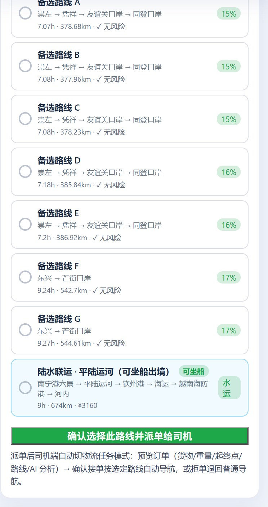
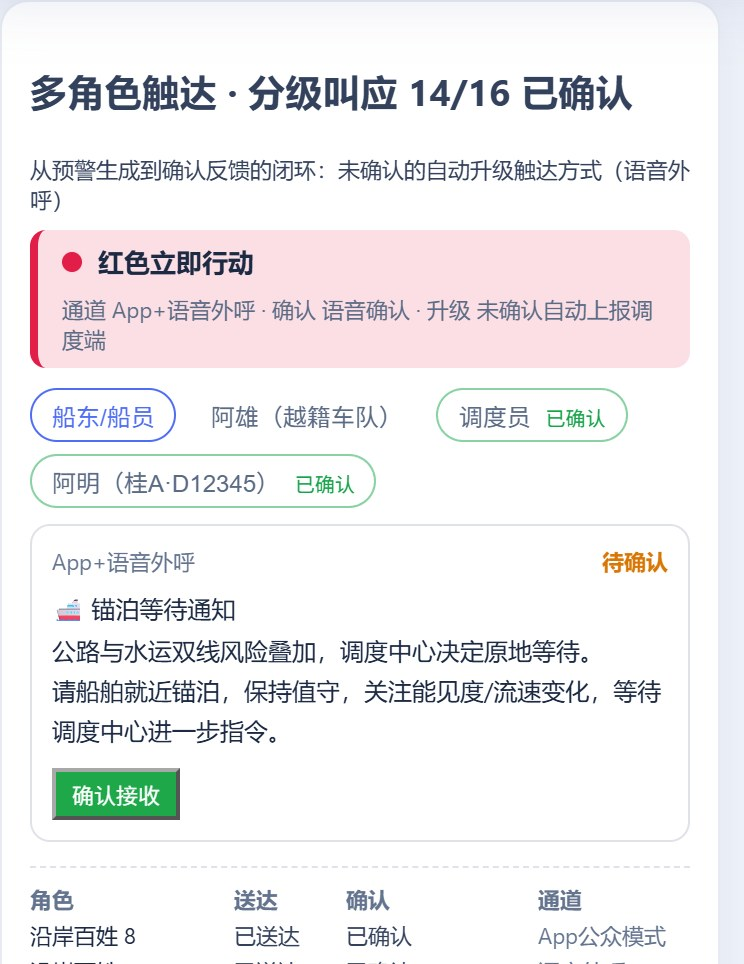
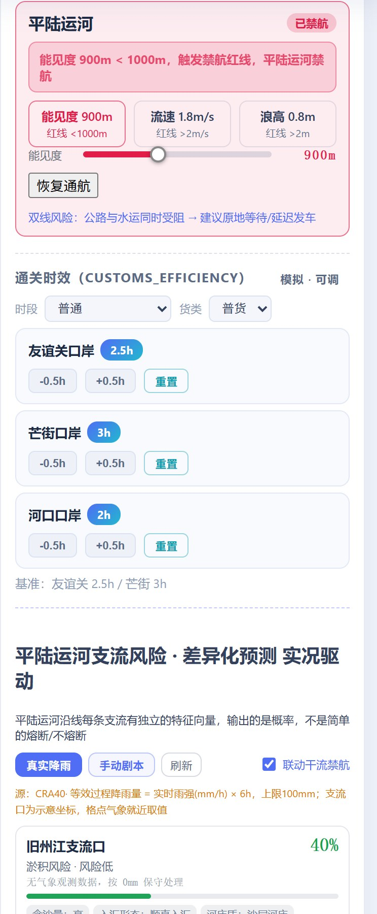
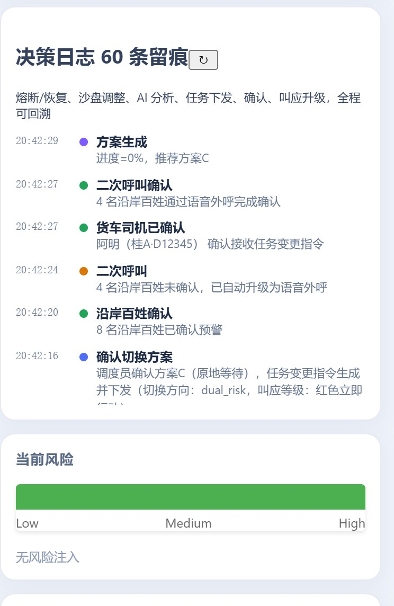

src/main/java/.../service 当前代码，
界面证据取自 交付材料/_ui/ 的实机截图。
TyphoonRiskRule 定义一次）IMPASSABLE_PENALTY）continue 跳过 → 天然绕行corridorAllFusedLEGS）· C 原地等待（WAIT_HOURS=6h 货损模型）agent-status 逐条点亮routeChoice，决策权留在人这一侧TASK-n：货物/重量/温控/时限 + 选定路线快照 + AI 概率快照registerActiveRoute 让守护中枢改盯这一单的起终点task-assigned 广播，大屏与司机端共用一条流/current 回到物流任务模式（断线重连不丢单）route-update（advice + advisory + hazardEdgeIds）DecisionSandboxService#direction()，推荐判定 SolutionAgent#recommend()| 局势（direction） | 触发条件（代码原判据） | 推荐方案 | 系统动作 | 界面回显 |
|---|---|---|---|---|
| normal 双线正常 | 公路未熔断 且 运河未禁航 | A（时效最优） | 常态口径：六维给整趟绝对值而非"改道增量"，触达给派单前指令与权益保障 | 司机端顶部「全线通畅」；研判说"沿线口岸无生效熔断"，若别的口岸断了则点名"已熔断但不在本程路线上" |
| road_to_water 公路断 → 切水运 | 友谊关 fused 或被注入 penalty≥100 的等效熔断（暴雨 ≥80mm 或台风） | B 陆水联运 | 方案 B 走平陆运河 LEGS（公路→换装→运河→海运），过闸费免征、碳排按水运系数 0.35；装船时刻取 DemoClock.boarding() 真实时钟，不写死 15:30 |
沙盘断面「友谊关 120mm 已熔断 · 降雨量需降至 75mm 以下才恢复通行」；推荐语给"赶时效走公路 / 省成本走联运 9 小时"取舍 |
| water_to_road 水运禁航 → 切公路 | 能见度 <1000m 或 设计流速 >2.0m/s 或 有效浪高 >2.0m 或 风速 ≥13.9m/s（7 级）——任一即禁航 | A 公路 | 方案 B 降级为「禁航·锚泊等待」（+8h 与锚泊费），软惩罚 WATER_FUSE_PENALTY=100 抬高成本而非删除；状态翻转即广播 canal-block / canal-recover，携带受影响运河路线清单 |
运河断面「平陆运河 已禁航」＋红线原因（含"由风速推算""含支流涨水联动贡献"） |
| dual_risk 双线风险 | 公路熔断 且 运河禁航 | C 原地等待 | 等待 6h 后复判；货损率按货物延误敏感度模型算（冷链火龙果 6h 满档），强行通行货损与安全均不可控 | 推荐语直说"公路与水运双线风险叠加"，不给虚假的绕行希望 |
| corridorAllFused 全域受阻 | 公路所有走廊都搜不出（含降级兜底仍无路）且 运河禁航 —— CorridorAdvisoryService |
C（形态按局势变形） | 三选一动作：DEFER 未发车→暂缓发车；RETURN 在途未过口岸→按真实路网给折返里程与耗时；HOLD 已出境→折返要重新通关不经济，建议就近安全停靠。出境点位置以 customsCrossRatio 下发，司机端用本地 GPS 进度自行复算动作 |
方案 C 卡标题改写为「返回起点待命 / 就近安全停靠等待 / 暂缓发车待命」；等待时长注明"无预计解除时刻的预报数据，到点复判，不作为承诺时效" |
| 进度闸门 横切分支 | progressRatio > BACKWARD_GATE(0.5) | B 置为不可用 | 车已开过装货港（南宁港六景）→ 方案 B 标 notApplicable，不进六维表、不参与推荐；此时公路断则退而求其次 A → C。在途行程也不读预生成缓存（缓存不包含车辆当前位置） |
方案 B 卡显示"车辆已行驶全程 X%，装货港已在身后，回港口换乘不经济——本方案对当前行程不适用" |
守护线程 60s 巡检 / 沙盘改档 / 官方推送 / 灾害注入 / 支流实况联动，全部走同一入口 notifyRiskChanged(reason)
300ms 窗口内的多次风险变化合并为一次重算，异步线程执行，界面不卡；重算失败也照发（附 error 与兜底建议）
关注集合含：导航中 / 已选线未开始 / 目的地越南端 / 大屏兜底主路线；每条单独出 planRouteFast 结果
route-update（advice＋advisory＋hazardEdgeIds）、task-assigned、agent-status、outreach-update、canal-block/canal-recover
payload 带 origin/destination，大屏与司机端只处理自己的路线；芒街熔断而本程走友谊关时，司机端不会被骚扰（"另一走廊有 N 处风险，不在当前路线上"）
ContestWeatherProvider）servedFreshSimulatedWeatherProvider 离线模拟温和天气，卡片有数且不误报灾害/api/weather/source 可查真正来源decision-cache/scenario_*.json，2 秒出结果并标 cacheHitdata/tile-cache，底图 1~4 手动可切GET /api/task/current 回到物流任务模式
「开始导航派单 · 从以下路线选一条派给司机」：推荐路线（全线通畅）7.03h · 376.39km · 灾害概率 15%（本图截到它下方的备选 B~E，逐条同样给时长 / 里程 / 概率，调度员可比可选定）。

红色级行动横幅（通道 · 确认方式 · 升级策略）＋五类角色状态灯；未确认倒计时到点自动外呼，回执计数 14/16 直接写在卡标题上。

平陆运河「已禁航」状态、各支流独立风险输出、货物安全指数；红线原因区分"人工基准 / 风速推算浪高 / 支流涨水顶托流速"。

决策日志逐条时间线（含熔断/恢复/派单/叫应上报），配「原始返回」展开核对接口原文——结论能回溯到当时的雨量、阈值与推理通道。
roadBlocked 与 waterBlocked（外加进度闸门与全域受阻判据），沙盘滑块调档即可复现任一分支；
③ 降级层都有原文标签——每一层兜底在界面上标为「模拟降级 / 在线 API / 预生成文案」，来源与通道随状态显示。
配套：图 3 服务蓝图（《10》）看角色接触点，图 4 界面原型（《11》）看这些判定的落点界面，图 1/2 系统架构（《08》《09》）看模块归属。